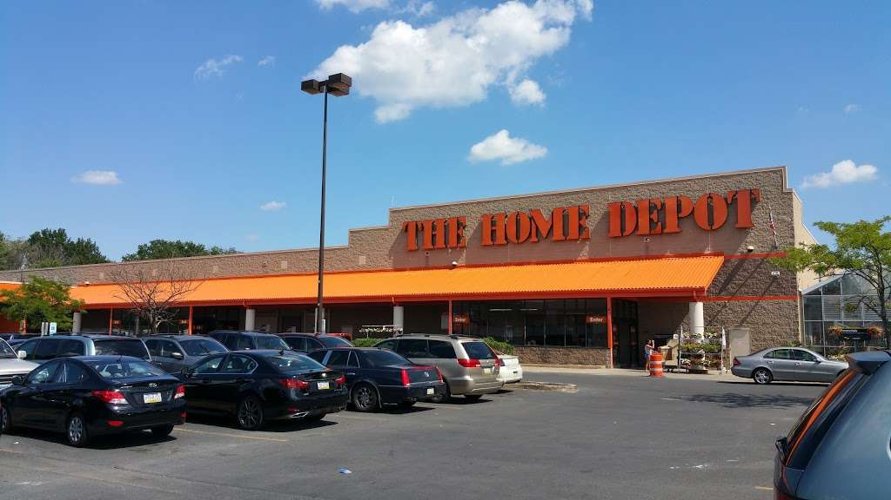
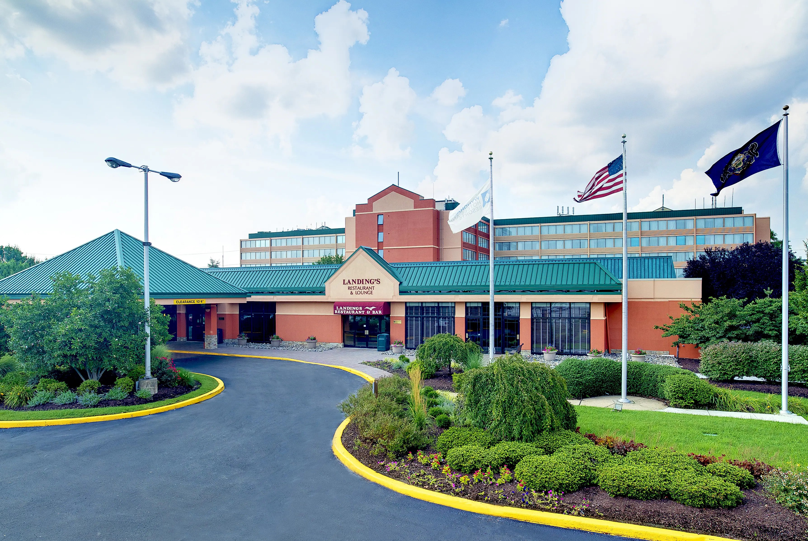

Home Depot
Working at Home Depot is what I consider my first real job becuase of my full time status and how long I stayed there. Even tho its just a big retail box store for construction materials, I did learn alot of transferable skills. I felt a big boost in my soft skills as a very akward teen. I worked several roles such as paint assoicate, cashier, customer service rep. My favorite thing about this job was the relationships I built with my co-workers. Good times, overall!
Wyndham Garden Hotel
I worked as a front desk assoicate at this job. It was interesting and fairly short experiece, since I only worked here for a couple of months. Again I feel like working this job reinforced my soft and communication skills. Handling difficult siutations was a regualr part of the job.
Simpay
Simpay was credit card processing company I worked for about 3 years. It was my first IT job.
At first getting accustomed to working at a IT desk was a hurdle, but it was definiely rewarding.
It gave me the confidence to understand I could do more then just customer service work.
I got my COMPTAI A+ while working this job as well.
It was a blast learning about, "What is the internet?," and "How CPU really works."
The bread and butter of this job was supporting point of sales equipment.
This company leased and provide usually small credit card terminals to merchants with small business.
It was my job to support the credit card terminals.
I also did miscellious task like manage credit card batches as well.
Overall, a great learning experiece. It prepared me for other service desk roles.
I realized what you support might change but the process of troubleshooting stays the same from service deskt to service desk.
Accenture
I did a short intership at Accenture. I was working as a serivce desk analyst. It was similar to the work I did at Simpay, but instead of supporting merchants it was office workers. I liked the experiece of working with more common hardware, like laptops, desktops, and printers. My Co-Workers were awesome and were the best part of the job.